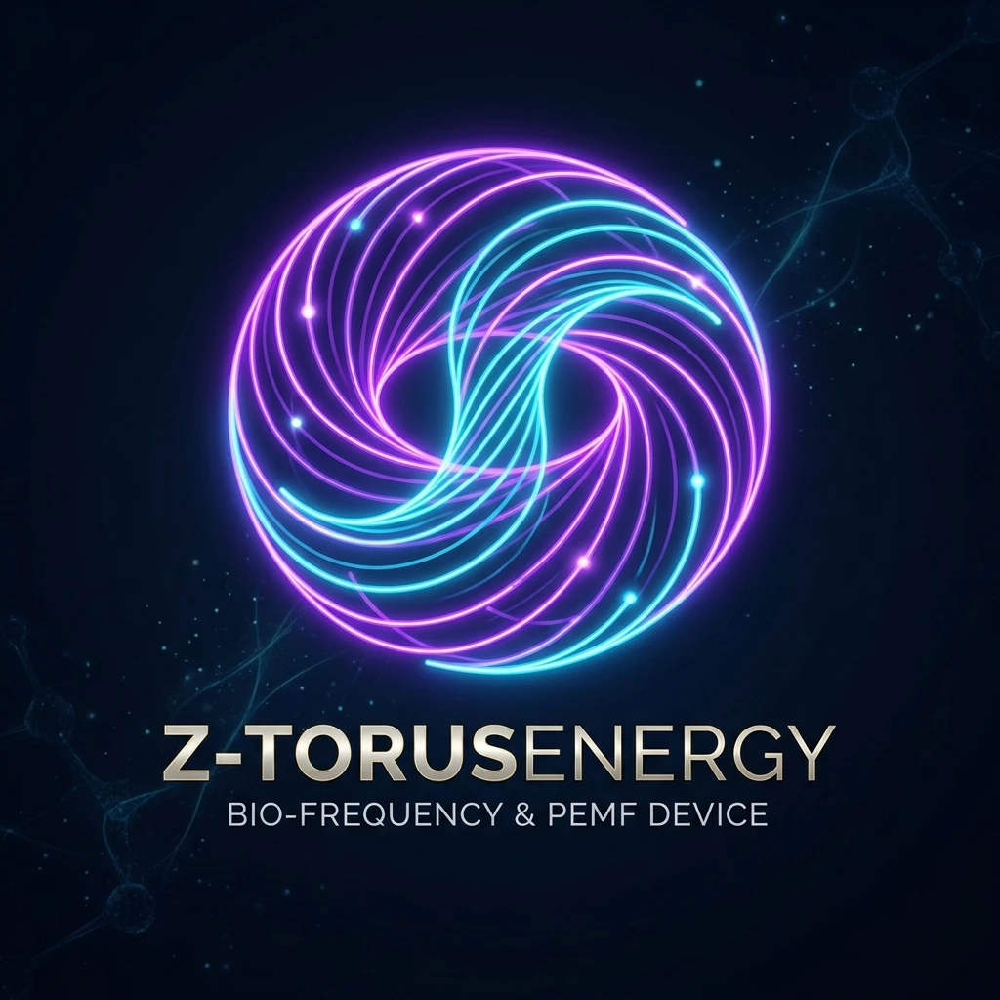

Profesyonel Bio-frekans ve Darbeli Manyetik Alan Sistemi
Frekans Listesini Bir kez cihaza gönderin. Telefonu kapatabilir bluetooth bağlantısını kesebilirsiniz. Cihaz TELEFONDAN BAĞIMSIZ ÇALIŞIR.
Rife CAFL/Handbook, Rodin Vortex (1-2-4-8-7-5 & 3-6-9), Schumann Rezonansı ve Solfeggio dizileri tek bir uygulamada. 5500+ frekans listesi ve açıklamaları.
Rezonans ve PEMF sistemleri için optimize edilmiş keskin Kare Dalga. Tam net üretilen frekans değerleri.